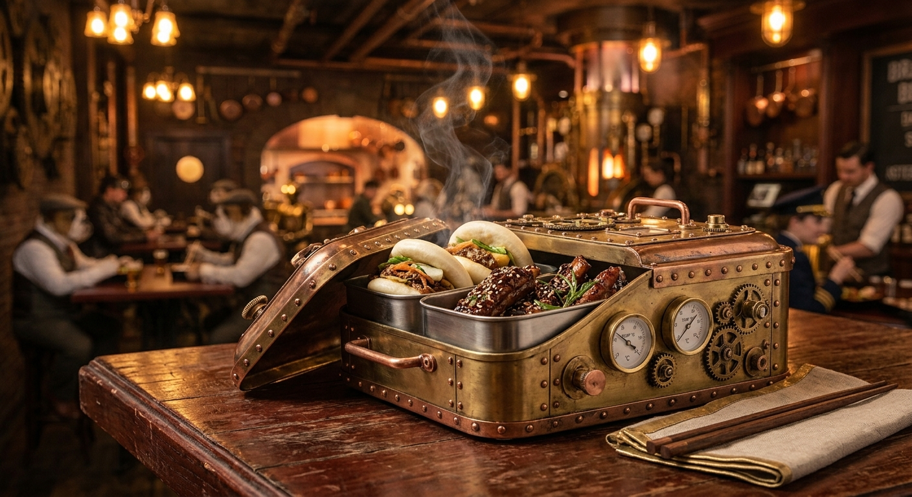

Steam-Heated Compartments
Every tier of our custom brass bento boxes is fed directly by subterranean steam pipes, keeping your short ribs tender and your steamed buns cloud-soft until the final bite.
Steam-Driven Flavors for the Modern Canine & Crew
Welcome to New London's premier steam-powered culinary depot. Commissioned under the decree of Grand Marshal Bartholomew "Gears" Montgomery, our establishment bridges human innovation and bulldog industrialism inside a brass-riveted bento paradise.


Every tier of our custom brass bento boxes is fed directly by subterranean steam pipes, keeping your short ribs tender and your steamed buns cloud-soft until the final bite.

Watch automated brass shuttles streak across overhead rails, delivering fresh brews, bone broths, and polished cutlery directly to your table with mechanical precision.